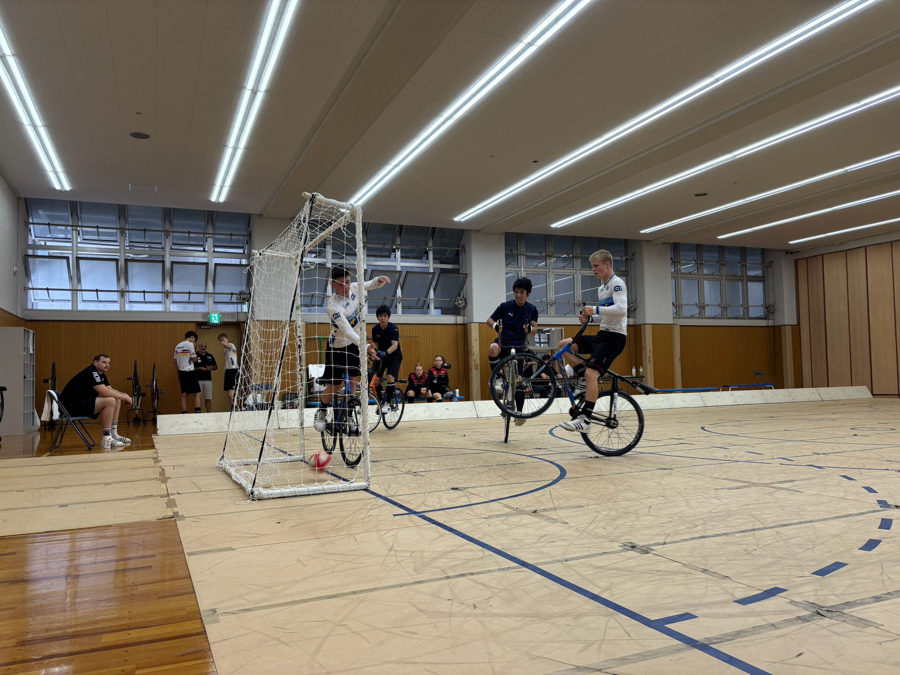

2026ジャパンカップにおいて、東京科学大学からは１チームが出場し、 結果は以下の通りとなりました。
-
Tokyo Tech
福田・山本ペア
８位
毎年９月に行われるドイツのジュニア選手との交流戦。 今年は全日本のプレーを鑑みてTokyo Techが招待され出場しました。
Tokyo Techは予選は全敗。たちかわCSCとの試合は前半2-1と勝ち越しの展開を作るも、 後半に地力の差で３点を決められ2-4で敗北しました。
78位決定戦では香港と関西の学生のMixed Teamと対戦。 コーナーなどで点を決めるも、攻めからのカウンターで点数を決められ2-3で敗北し8位という結果に終わりました。
今年の大会はU19のヨーロッパチャンピオンが来日し大会に出場。 世界トップレベルのプレーを間近で見る貴重な機会となりました。 ヨーロッパチャンピオンは日本代表が0-10で敗北するほどの強さであり、欧州と日本のレベル差をひしひしと感じる大会ともなりました。

ヨーロッパチャンピオンからコーナーで一点
まず、率直に楽しかったです。普段の練習では対戦することのない海外の選手や関西の選手に対して、 どうやったら点を取れるのか、そして勝てるのかを考えながらプレーするのは刺激的な体験でした。 一方で実力不足も大いに感じました。全日本から通してなのですが特にビハインドの展開からの試合作りに課題があると感じました。 得意なコーナーの形をもっと多く作ったり、攻撃の基本となるクロスの形からの攻めに関してもっと安定感や連携を高めていくことで 自分たちの得点パターンを多く作り、得点状況に関係なく強く戦えるようになりたいです。 このペアで出れる学生の大会も残すところインカレだけなので、そこで最高の結果を出せるようにプレーに磨きをかけていきたいです。